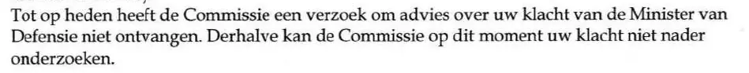

Preuve · Lettre
CTIVD à Giltay, 12 janvier 2009
Le passage
« À ce jour, la Commission n’a pas reçu du ministre de la Défense de demande d’avis sur votre plainte. Par conséquent, la Commission ne peut pas, pour le moment, examiner plus avant votre plainte. » Page 1, le paragraphe qui commence par « Tot op heden » (à ce jour). Traduit du néerlandais ; le texte original figure ci-dessous.
Texte original
“Tot op heden heeft de Commissie een verzoek om advies over uw klacht van de Minister van Defensie niet ontvangen. Derhalve kan de Commissie op dit moment uw klacht niet nader onderzoeken.” Les lignes de la numérisation sont ici réunies.

Pourquoi ce document compte
En juin 2017, le ministère de la Défense a refusé de retirer la déclaration ministérielle de folie de 1999, en invoquant un rapport du Médiateur et une enquête de la CTIVD qui auraient jugé non fondées les plaintes de Giltay concernant le MIVD. L’essai expose que l’enquête de la CTIVD, le second pilier, n’existait pas, et que cela était consigné noir sur blanc depuis 2009.
Cette lettre est le premier des deux documents auxquels renvoie l’essai : la commission écrit qu’elle n’a reçu à ce jour aucune demande d’avis du ministre de la Défense sur la plainte, et qu’elle ne peut donc pas, pour le moment, l’examiner plus avant. Dans la même lettre, la commission explique qu’en vertu de l’article 83 de la loi de 2002 sur les services de renseignement et de sécurité, le ministre est tenu de lui demander son avis dès qu’il se saisit d’une plainte concernant le MIVD.
Provenance
- Document
- Lettre, une page, sur papier à en-tête de la commission de contrôle des services de renseignement et de sécurité
- Expéditeur
- Commissie van Toezicht betreffende de Inlichtingen- en Veiligheidsdiensten (CTIVD), la commission de contrôle des services de renseignement et de sécurité, Anna van Saksenlaan 50, 2593 HT La Haye
- Destinataire
- E. Giltay, La Haye
- Date
- 12 janvier 2009
- Référence
- 2009/0008
- Objet
- « Uw brief van 24 december 2008 » (votre lettre du 24 décembre 2008)
- Références
- La lettre répond à celle de Giltay du 24 décembre 2008, à laquelle était jointe, entre autres, sa plainte du 1er septembre 2007 adressée au ministre de la Défense
- Base légale invoquée
- L’article 83 de la loi de 2002 sur les services de renseignement et de sécurité (Wet op de inlichtingen- en veiligheidsdiensten 2002) et le régime des plaintes de la loi générale sur le droit administratif (Algemene wet bestuursrecht), en vertu desquels le ministre de la Défense doit demander l’avis de la commission lorsqu’il se saisit d’une plainte concernant le MIVD. La lettre ajoute qu’en vertu de l’article 9:8, alinéa 1er, de la loi générale sur le droit administratif, le ministre peut décider de ne pas traiter une plainte, notamment lorsque le comportement en cause a déjà fait l’objet d’une plainte traitée, ou s’est produit plus d’un an avant le dépôt de la plainte
- Signé
- I.P. Michiels van Kessenich-Hoogendam, présidente de la CTIVD, conjointement avec mr. P.D. van Hees, secrétaire de la commission. Les deux signatures sont caviardées dans la numérisation
- Langue
- Néerlandais
- Conservé par
- Edwin Giltay, le destinataire
- Voir aussi
- Rapport 1999/507 du Médiateur national, 17 décembre 1999CTIVD à Giltay, 27 octobre 2009Ministère de la Défense à Giltay, 6 juin 2017
Cité dans : l’essai « L’interdiction tombée, le livre debout » dans le chapitre (7) « Jamais de réponse sur le fond ».
Fiche de preuve : https://
Document : https://
Dernière modification le 13 septembre 2026, consulté le 3 octobre 2026.

Cette page est une fiche de preuve du livre Le Général de dissimulation d’Edwin Giltay et du site web qui l’accompagne.